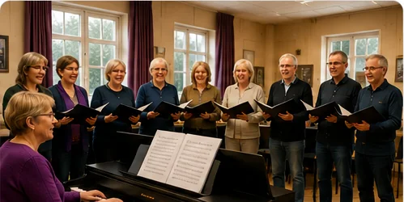
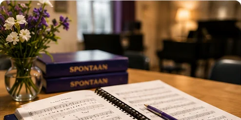
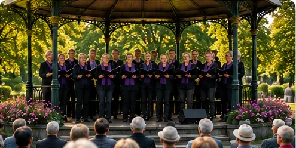
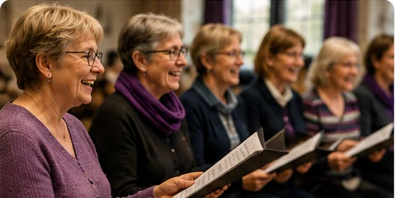
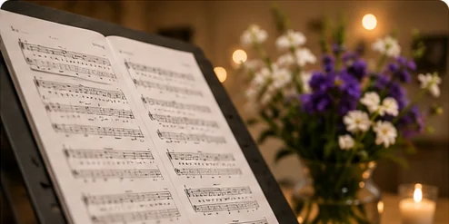

Optredens
Optredens
Spontaan zingt tijdens een sfeervolle zomeravond
Een avond vol muziek, ontmoeting en bekende nummers die het publiek enthousiast meezong.
Lees verderHome / Nieuws
Verhalen, optredens en meer achter de muziek.
6 nieuwsberichten gevonden
Optredens
Een avond vol muziek, ontmoeting en bekende nummers die het publiek enthousiast meezong.
Lees verder
Vereniging
Houd je van zingen en gezelligheid? Kom vrijblijvend kennismaken tijdens een van onze repetities.
Lees verder
Media
Van de eerste repetitie tot het podium: een kijkje achter de schermen bij Zanggroep Spontaan.
Lees verder
Optredens
Muziek verbindt. Dat bleek opnieuw tijdens een bijzonder optreden voor een enthousiast publiek.
Lees verder
Vereniging
Onze leden vertellen waarom de wekelijkse repetitie voor hen een waardevol moment is.
Lees verder
Media
Bekende klassiekers, verrassende nummers en muziek die uitnodigt om mee te zingen.
Lees verder